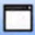
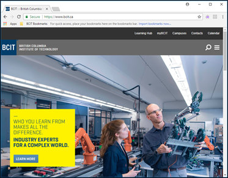

Capturing Screenshots with FastStone Capture
You can use FastStone Capture to capture screenshots in a variety of ways.
Before You Start
- Download and install the FastStone Capture toolbar (if not already installed).
- Open the FastStone Capture toolbar.
- Arrange any open program, browser, and/or dialog windows on your desktop in the manner you wish to capture.
Capturing Screenshots
Capture Screenshots in the following ways.
Capturing Active Windows
You can capture the currently active window.
- Left-click on a window to make it active.
- Left-click on the Capture Active Window

button on the FastStone Capture toolbar.The captured screenshot crops out anything outside of the active window. (See Figure 1.)

Figure 1: A screenshot of an active window.